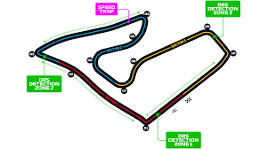
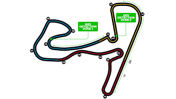
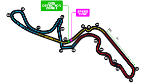

Les Circuits de la Formule 1 - Saison 2024
Découvrez les 24 circuits qui composent la saison 2024 de Formule 1. Chaque piste propose des défis uniques, offrant aux pilotes et aux fans des moments inoubliables.
1. Sakhir (Bahreïn)
Un circuit moderne avec des défis techniques et des conditions climatiques difficiles.

2. Djeddah (Arabie Saoudite)
Un circuit urbain spectaculaire et rapide, avec des virages serrés et de longues lignes droites.

3. Melbourne (Australie)
Connu pour ses virages serrés et son ambiance festive.

4. Imola (Italie)
Un circuit historique qui met les compétences des pilotes à l'épreuve.
5. Miami (États-Unis)
Un circuit urbain unique avec une ambiance glamour.

6. Monaco
Un circuit emblématique, technique et prestigieux à travers les rues de Monte-Carlo.

7. Barcelone (Espagne)
Un circuit polyvalent qui teste l'équilibre des voitures.
8. Montréal (Canada)
Un circuit rapide avec des murs proches et des défis techniques.
9. Spielberg (Autriche)
Un circuit court mais rapide, entouré par des montagnes pittoresques.
10. Silverstone (Royaume-Uni)
Un circuit légendaire avec des virages rapides et historiques.

11. Budapest (Hongrie)
Un circuit technique avec des virages rapprochés.

12. Spa-Francorchamps (Belgique)
Un circuit emblématique avec son célèbre virage Eau Rouge.

13. Zandvoort (Pays-Bas)
Un circuit rapide avec des virages inclinés uniques.
14. Monza (Italie)
Un temple de la vitesse avec des virages rapides et des lignes droites longues.

15. Singapour
Un circuit urbain nocturne avec des défis physiques pour les pilotes.

16. Suzuka (Japon)
Un circuit technique en forme de "8", adoré par les pilotes.
17. Austin (États-Unis)
Un circuit moderne avec des dénivelés importants.
18. Mexico City (Mexique)
Un circuit unique avec une ambiance festive et un stade impressionnant.

19. São Paulo (Brésil)
Un circuit classique connu pour ses courses palpitantes.
20. Las Vegas (États-Unis)
Un nouveau circuit urbain spectaculaire dans la ville du divertissement.

21. Yas Marina (Abou Dabi)
Un circuit moderne qui conclut la saison dans un cadre luxueux.

22. Shanghai (Chine)
Un circuit avec des lignes droites longues et des virages techniques.
23. Portimão (Portugal)
Un circuit vallonné avec des virages fluides.
24. Baku (Azerbaïdjan)
Le circuit de Bakou, en Azerbaïdjan, est célèbre pour ses lignes droites rapides et son tracé urbain exigeant.